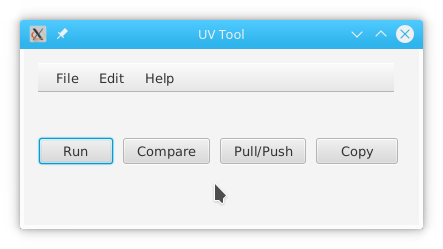

The main window
The application window has 4 buttons:

UvTool is an application to allow a user to do various operations on a UniVerse server. The program is written in Java and utilizes JavaFX and UniObjects for Java technologies. Its a work in progress, so there may be some issues. Having said that, I've been using it for quite some time and most (if not all) of the major bugs have been fixed.
The application has 4 primary functions:
NOTE:This feature currently presumes you know how to write Java code and use UniObjects© for Java. The plan is for UvTool to create a program itself by allowing the user to simply define the interface. But that's a long way off.
The run button will open this dialog box:
NOTE: At this writing, some of the features of the profile create dialog may not be working smoothly.
Particularly, the "+" buttons which are supposed to let you define a new server or account on the fly.
The "Test connection" and "Save" buttons will be disabled until all the required information is entered.
Select the server and accounts from the drop-down box for each.
Next, enter your user name and password in the appropriate boxes.
Next, click the "Test connection" button. If the connection succeeds, the Profile Title drop-down will be cleared.
Enter a title for this profile, such as "admin on corvette", then click the Save button.To run a java application, you must first write one, then define the interface. Writing the program is beyond the scope of this document. Refer to Rocket's UniObjects for Java documention for more information.
To define a program, select File->New->Application from the main menu and the following dialog box will be presentedFill out the name of the application class, the package in which the class resides, and a description of what the application does. The files that the application uses is split into two sections: Files that are read from and files that are written to. The reason for the two sections is to allow an application to read from one server, and write to another.